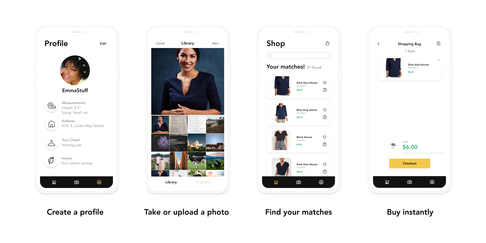
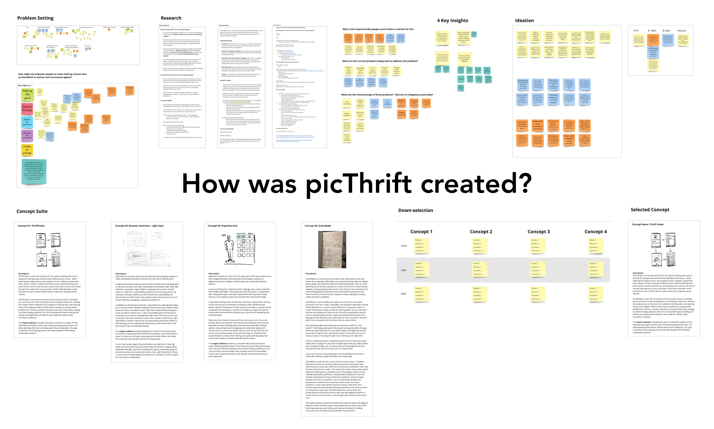
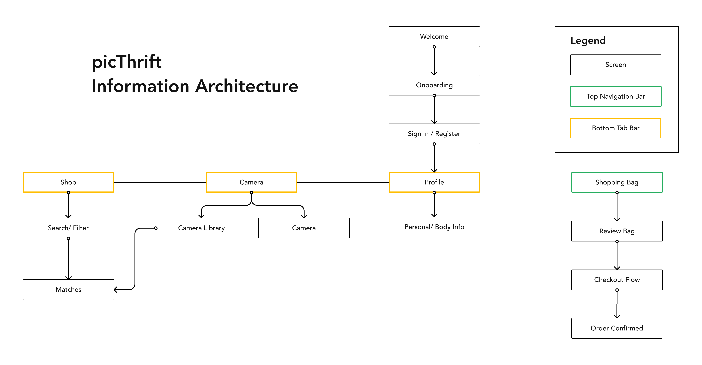
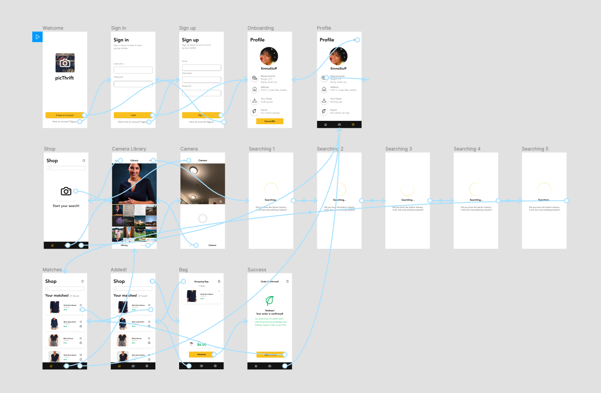

picThrift
Ryan Untalan
Nov. 18, 2020 · 6 min
Overview
Project Description: picThrift is a mobile application that helps reduce the influence of the fast fashion industry by making it easy for people to find and purchase second-hand clothing alternatives.
Role: Product Designer
Tools: Miro and Figma
Time Duration: 5 days
Project Context
As an introduction to the University of Washington’s MHCI+D program, our cohort engaged in a five-day design sprint. In teams of three, we were challenged to explore ways of using technology to think about harmonious cohabitation with human and non-human agents. My team and I decided to investigate the relationship between people, the environment, and clothes.
Design Challenge
The clothing industry is harmful to human and non-human agents. There are horror stories of the inhumane labor conditions, and it is the 2nd most polluting industry. With these concerns in mind, our team formulated the design challenge:
How might we empower people to make clothing choices that are beneficial to human and non-human agents?
Design Response
picThrift is a mobile application that makes it easy for people to find and purchase second-hand clothing alternatives.

picThrift helps...
- reduce negative environmental impact by reducing the influence of fast fashion purchases.
- give new life to second-hand clothes by facilitating a relationship between second-hand clothes and a new owner.
- make it easy to second-hand shop by streamlining the process for finding second-hand clothing alternatives that fit you.

Problem Setting
Team Alignment
We start the design sprint with team alignment. Our values aligned on sustainability, and we established a shared purpose of developing a product that contributes to shopping sustainably.
Problem Space
The theme of the sprint is to design for harmonious cohabitation with human and non-human agents. Our team decided to focus on the problem space surrounding the relationship between humans, the environment, and clothes.
Research
Research Questions
- How does the clothing industry affect the environment and humans?
- What products currently exist that promote shopping sustainably?
- What are the barriers to shopping sustainably?
Formative Research
We conducted a literature review, three interviews, and a competitive analysis to investigate these questions.
Insights
- The clothing industry is detrimental to the environment and people: The clothing industry is the 2nd most polluting industry. The dominant business model within this industry is fast fashion, and it leads to high environmental costs stemming from high water usage, chemical pollution, and landfill disposal.
- Common motivators to sustainable shopping: Through our interviews, common motivators to sustainable shopping include people caring about sustainability, prices are lower, and an interest in vintage fashion.
- Existing products prove demand: With our competitive analysis, we found many existing products within this problem space, which proves demand. There are thrift stores such as Goodwill, online thrift stores like Thredup, Social media clothing swap groups, and clothing companies that focus on creating sustainable clothing products like Patagonia.
- Several perceived barriers to shopping sustainably: Through our interviews and competitive analysis, we discovered that thrift shopping online or in-store is a time-consuming task and that it’s difficult to find clothes that fit. Sustainable clothing brands such as Patagonia are expensive. Also, in some cultures, there are negative connotations to second-hand clothes shopping.
How might we?
Informed by our insights, we created a how might we statement to define a clear project scope.
How might we empower people to make clothing choices that are beneficial to human and non-human agents?
Ideation
Braiding
Braiding is an ideation method that involves several rounds of sketching then sharing. We used this method to generate 30 concepts. Through discussion, we aligned on 4 ideas that we believed had the most potential to address our how might we statement.
Concept Suite

- Thrift Finder: A mobile application that allows you to take a photo of a clothing item then find the second-hand clothing alternative.
- Light Style: A browser extension that displays a sustainable and ethical score for clothing items at any online store.
- Paperless Doll: A web app where users can create a doll with their shape/size/height and face to digitally try on sustainable and second-hand clothing.
- Green Baby: A service, tool, and network that helps parents and their babies live sustainably, affordably, and conveniently.
We shared our concepts with our classmates for critique. Thrift Finder received the most interest, and we learned that people liked how easy it seemed to integrate into their lifestyle.
Down-Selection
Ultimately, we used a ranking method to select our final concept. The criteria we used was: exciting, relevance, and achievable. Each of us assigned a score to each concept, and Thrift Finder received the highest score. With a final concept in place, our team was ready and excited to start prototyping!
Prototyping
Information Architecture
We developed a hierarchical information architecture to organize our features and define a clear structure.

Figma
We then collaborated on Figma to design and prototype our idea. I designed the shop, camera, search, and results screens, and also connected the frames.

Usability Testing
We conducted two remote usability tests which involved the participants to walk through the shopping process. We learned that:
- The app can use more guiding text. It wasn’t immediately obvious what our application did. One participant suggested that we implement an onboarding or add more guiding texts to highlight how to use the app.
- Not used to buying items on the phone. Both participants mentioned that they do most of their online shopping on a desktop, so they weren’t used to buying things through an app.
- The name Thrift Finder was confusing. The name Thrift Finder made it seem like that the app would find local thrift stores. I suggested that we change our product’s name to picThrift to highlight the photo feature.
Final Results

Reflection
Future Work
- Educational onboarding. Based on our usability tests, it wasn’t immediately obvious what the application did. An educational onboarding experience can help introduce new users to the interface and highlight key functionalities. The onboarding can also serve as an opportunity to inform the user on how they’re helping the environment by using the app.
- Search/ Filter UI. One key feature that we want to add in the future is the search and filter interface. We believe that this feature will help streamline the process for finding the perfect second-hand clothing alternative.
- Explore browser extension feature. People don’t normally buy clothes on their phones. Based on our usability tests, we found that our participants prefer to shop for clothes on a desktop interface. So one potential way of integrating picThrift onto the desktop is through a browser extension. While browsing through an online clothing store, the browser extension can notify the user if an item has a second-hand alternative.
Takeaways
Embrace ambiguity. As a designer, I’m going to be in many uncharted situations with undefined boundaries. By embracing ambiguity, I accept the challenge to explore the unknown and make sense of what is uncertain. Embracing ambiguity sets the stage for staying flexible. As I continue to navigate through the pandemic and remote work, I look forward to learning from and adapting to the challenges of uncertainty.
Collaborate with multiple perspectives. Shoutout to Leyla and Laura! I greatly appreciate the opportunity to collaborate with them. Throughout the design process, each of us brought a different perspective that allowed us to learn and build on each other’s ideas. I believe our unique experiences and skills helped us to design a more informed product. In addition, getting critiques from my classmates helped me refine the concepts and understand how to communicate my ideas more clearly.
Thank you for reading!